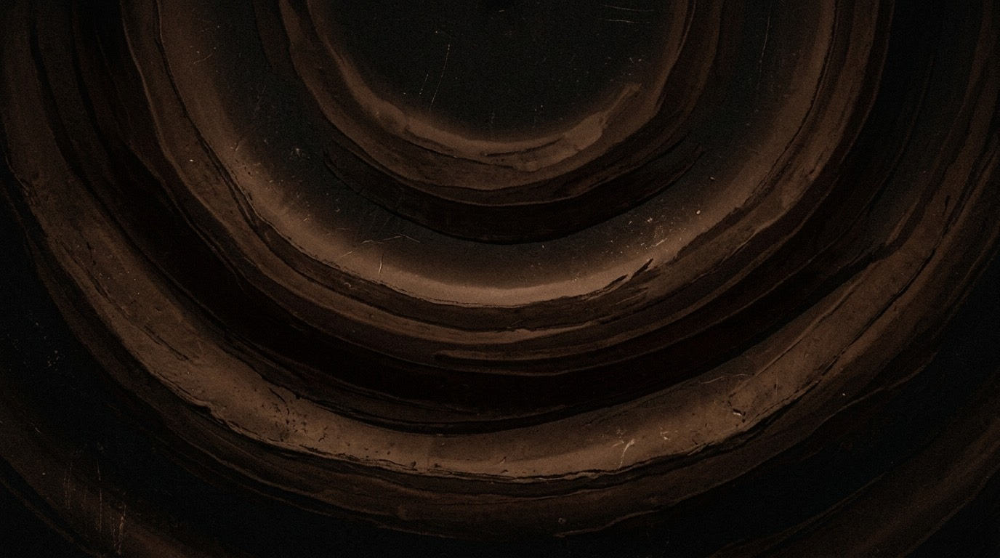

Deeper than white noise. Warmer than pink noise. Brown noise is the one your brain actually relaxes to. Play it free, right now.
Start ListeningBrown noise emphasizes lower frequencies — it sounds like a deep rumble, a distant waterfall, or heavy wind. Unlike white noise (which can feel harsh), brown noise feels warm and enveloping. It's become the go-to for people who need help falling asleep or staying asleep.
Drift doesn't just play brown noise. You can layer it. Add gentle rain for texture. Mix in ocean waves for rhythm. Keep it pure at 80% and let it fill the room. Your call.
Pure Brown — brown noise at 80%. nothing else. the classic.
Brown Rain — brown noise at 60%, rain at 30%. depth with texture.
Deep Ocean — brown noise at 50%, ocean waves at 40%, drone at 10%. heavy and rhythmic.
Drift generates brown noise in real-time using the Web Audio API — it's not a recording on loop. It runs continuously without ads, pop-ups, or "upgrade to premium" interruptions at 2am. Set it and forget it.